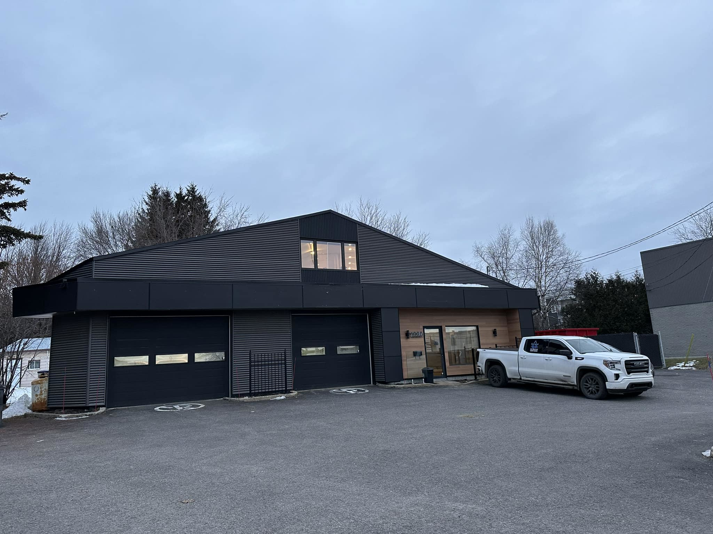
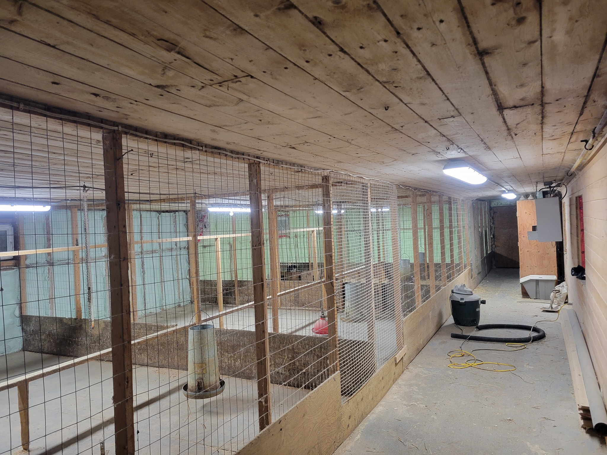

Découvrez notre dernier projet électrique, une réalisation exceptionnelle où l'art de l'éclairage prend vie. Notre équipe chez Electricité DJ Inc. a créé un environnement véritablement unique en intégrant des luminaires encastrés d'une élégance sans pareil.
Dans ce projet, chaque détail a été méticuleusement conçu pour offrir un éclairage hors pair, apportant une atmosphère captivante à chaque espace. Les luminaires encastrés, soigneusement positionnés, jouent un rôle clé en ajoutant une touche moderne et sophistiquée à l'ensemble.
L'utilisation judicieuse de différentes intensités lumineuses crée des jeux d'ombres et de lumières, mettant en valeur les caractéristiques architecturales et ajoutant une profondeur visuelle à chaque coin de la pièce. Que ce soit pour souligner des zones spécifiques, créer des ambiances chaleureuses ou accentuer des éléments décoratifs, notre éclairage sur mesure transforme l'espace en une œuvre d'art lumineuse.
En plus de l'esthétique exceptionnelle, nous avons également mis l'accent sur l'efficacité énergétique, en utilisant des technologies de pointe pour minimiser la consommation tout en maximisant l'impact visuel. Ce projet illustre notre engagement envers l'excellence, où l'électricité devient une véritable source d'inspiration. Laissez Electricité DJ Inc. illuminer votre projet avec notre savoir-faire inégalé.
Nom du projet 2
Découvrez notre projet récent dans le domaine de l'électricité, mettant en lumière notre expertise exceptionnelle dans la conception et l'installation électrique pour les garages commerciaux. Chez Electricité DJ Inc., nous avons créé un environnement électrique optimal, offrant une solution complète et innovante pour répondre aux besoins spécifiques de notre client.
Dans ce projet de garage commercial, nous avons mis l'accent sur l'éclairage fonctionnel et efficace, en intégrant des systèmes lumineux qui optimisent la visibilité tout en assurant une consommation énergétique minimale. Les luminaires ont été soigneusement positionnés pour éliminer les zones d'ombre, créant ainsi un espace de travail sûr et bien éclairé.
Notre équipe a également pris en compte les exigences de sécurité électrique, en installant des dispositifs de protection et en respectant les normes les plus strictes de l'industrie. Nous sommes fiers de notre approche axée sur l'efficacité énergétique, contribuant ainsi à réduire les coûts opérationnels à long terme pour notre client.
L'esthétique et la fonctionnalité ont été soigneusement équilibrées, avec des interrupteurs modernes et des panneaux électriques conçus pour faciliter l'accès et la gestion des équipements électriques. Chaque détail a été pris en compte pour garantir un environnement de travail optimal, reflétant notre engagement envers l'excellence et l'innovation dans le domaine de l'électricité commerciale.
Ce projet témoigne de notre capacité à fournir des solutions électriques sur mesure, adaptées aux besoins spécifiques de chaque client. Chez Electricité DJ Inc., nous sommes prêts à transformer votre vision en réalité, en vous offrant des solutions électriques fiables et de haute qualité pour les projets commerciaux. Faites confiance à notre savoir-faire inégalé pour illuminer votre espace commercial avec excellence.


Nom du projet 3
Explorez notre récent projet électrique dédié à la création d'un environnement optimal pour une étable abritant des animaux exotiques. Chez Electricité DJ Inc., nous avons conçu et mis en œuvre un système électrique sur mesure pour répondre aux besoins spécifiques de notre client, offrant une solution adaptée à la fois au bien-être des animaux et aux exigences opérationnelles.
Dans cette étable unique, notre équipe a mis l'accent sur la personnalisation et la customisation des installations électriques. Chaque aspect du système a été minutieusement planifié pour garantir un environnement sûr, confortable et adapté aux besoins spécifiques des animaux exotiques hébergés.
L'éclairage a été soigneusement étudié pour reproduire les conditions naturelles de lumière du jour, favorisant ainsi le bien-être des animaux. Des systèmes de contrôle sophistiqués permettent de moduler l'intensité lumineuse et la température, créant ainsi un environnement adapté aux différentes espèces présentes dans l'étable.
Notre approche s'étend également à la sécurité électrique, avec des dispositifs spécifiques pour prévenir tout risque potentiel. Des systèmes d'alarme et de surveillance sont intégrés pour assurer une réaction rapide en cas de problème, garantissant la sécurité à la fois des animaux et des installations.
Chaque prise de courant, interrupteur et élément du réseau électrique a été conçu en pensant à la flexibilité et à la facilité d'entretien. Notre équipe a travaillé en étroite collaboration avec le client pour comprendre les besoins spécifiques de chaque espèce hébergée, et chaque détail a été ajusté en conséquence.
Ce projet reflète notre engagement envers l'innovation et la personnalisation dans le domaine de l'électricité. Nous sommes fiers de pouvoir offrir des solutions électriques adaptées aux environnements uniques, mettant en avant notre capacité à personnaliser chaque aspect de nos projets pour répondre aux besoins spécifiques de nos clients. Faites confiance à Electricité DJ Inc. pour transformer vos idées en réalité, en apportant une expertise inégalée à chaque projet.